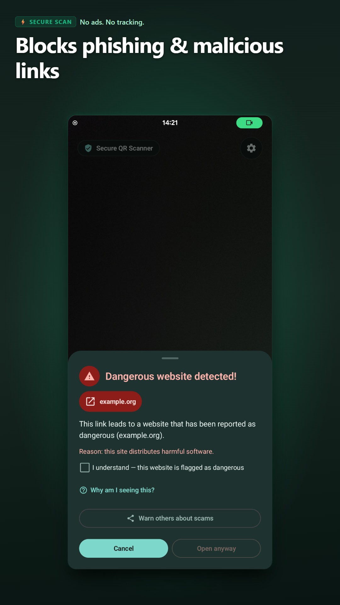
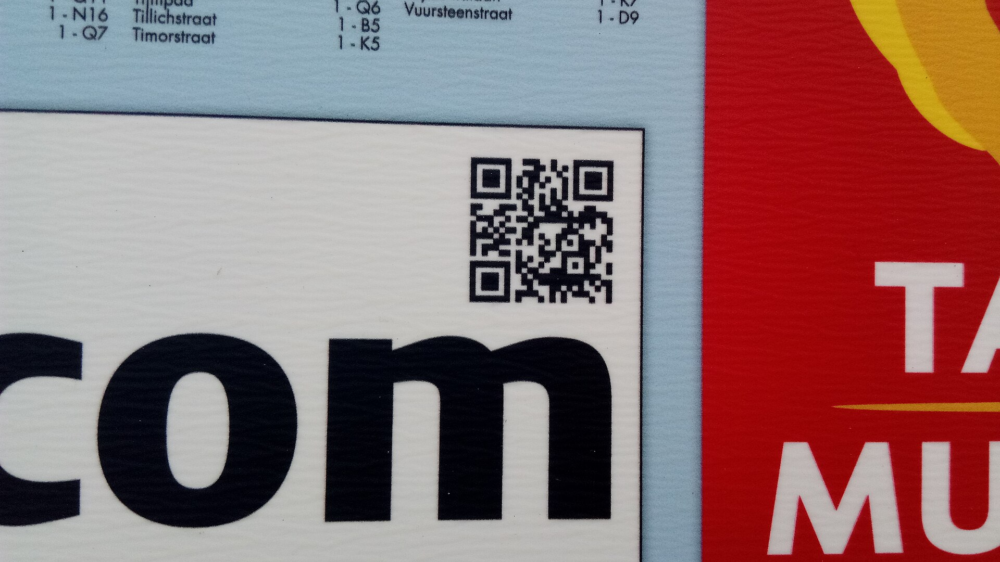

Spot QR scams before they open
Every scanned link is inspected against threat databases and phishing heuristics before your browser opens. Protect your Android device against quishing overlays and unmask suspicious links from SMS, WhatsApp, and emails.

Deep Link Inspection Pipeline
Scammers hide deceptive destinations behind URL shorteners and sticker overlays. Here is how Secure QR Scanner verifies where a link actually leads.
QR Payload Intercepted
Scanning a parking meter or delivery code captures the raw address without passing it to your browser blindly.
https://bit.ly/3xParkMeter
Redirect Chain Unmasked
Follows intermediate redirect hops in the background to reveal the disguised target host and strip deceptive paths.
→ parking-pay.fake-portal.ru/pay
Domain Isolation & Verdict
Isolates the true eTLD+1 domain, checks local threat databases, and warns you before any malicious code can execute.
eTLD+1: fake-portal.ru [FLAGGED]

The Quishing Threat in Public Spaces
Fraudsters routinely stick rogue QR codes over genuine parking meters, EV chargers, and restaurant tables. When unsuspecting visitors scan them, their default camera opens a phishing portal immediately.
Secure QR Scanner intercepts the payload on your device, resolves hidden redirects, checks local databases, and demands your confirmation before a single browser connection is established.
Engineered for Complete Scanning Safety
A full-featured scanner built around one uncompromising rule: nothing executes until you inspect and approve it.
Quishing & Phishing Defense
Scammers paste stickers over QR codes at parking meters and charging stations. Secure QR Scanner unmasks redirect chains, highlights the true destination domain, and executes offline phishing heuristics.
Check Links from Any App
Received a suspicious delivery SMS or chat message? Share the link directly to "Check link" or inspect your clipboard to verify where it leads without opening your browser blindly.
Wi-Fi & Action Verification
Joining a Wi-Fi network, adding contacts, or creating calendar events requires your explicit review. The scanner automatically warns against unencrypted or weakly secured (WEP) networks.
Product Barcodes & Recall Alerts
Scan groceries and consumer goods to view names, brands, and photos from Open Food Facts. Automatically alerts you if a product has been recalled by EU Safety Gate, openFDA, or CPSC.
On-Device Document Scanning & OCR
Scan multi-page documents directly to PDF and extract text from images. All page images, PDFs, and OCR models operate 100% on your device — no cloud uploads or external processing.
Privacy-First & Zero Tracking
Your scan history is encrypted locally using AES-256 and the Android Keystore. Features privacy mode (blocks screenshots), optional offline-only local checking, no accounts, and zero advertising.